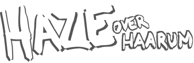
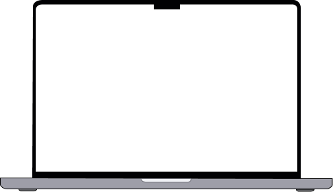
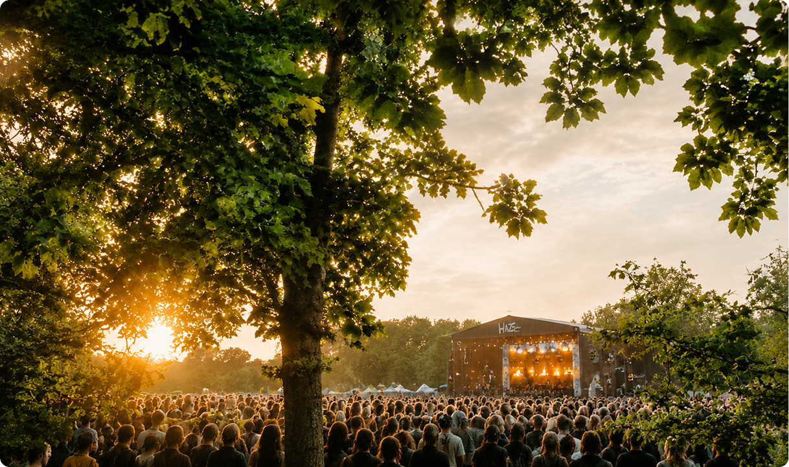
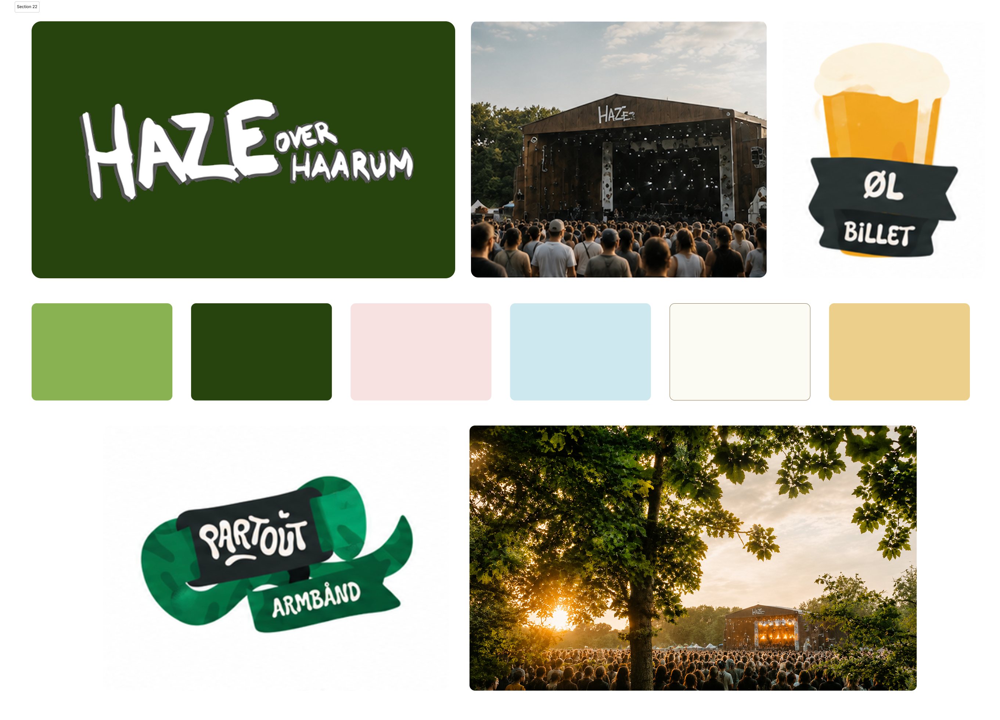
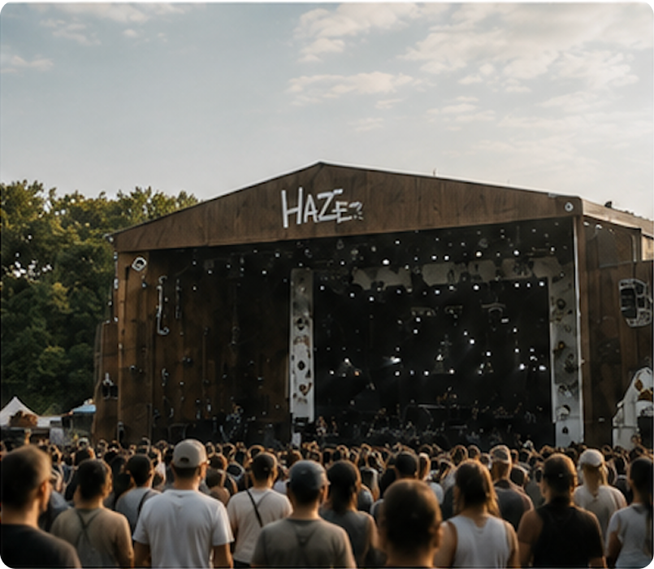
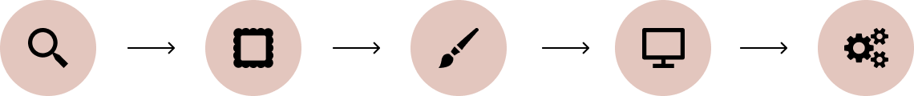

Visuel identitet, WordPress & Digital oplevelse

HAZE Over Haarum er et individuelt projekt med udgangspunkt i en eksisterende festival, hvor målet var at udvikle en ny digital identitet til HAZE Festival. Den eksisterende hjemmeside kommunikerer primært praktisk information og billetkøb, men i mindre grad den stemning, æstetik og de værdier, der gør HAZE til en særlig festival.


Jeg arbejdede med en farvepalette inspireret af natur, sommer og festivalens omgivelser, hvor grønne, blå, rosa og varme nuancer skaber et legende og imødekommende univers.
Typografien, farverne, billederne og de grafiske elementer blev sammensat for at skabe en tydelig sammenhæng på tværs af websitet. Målet var, at designet skulle føles mindre som en traditionel informationsside og i højere grad formidle den oplevelse og atmosfære, som brugeren kan forvente på festivalen.
Et vigtigt fokus i projektet var at gøre informationen nem at finde og skabe en overskuelig brugerrejse. Jeg arbejdede derfor med strukturering af indhold, navigation og visuelle hierarkier, så brugeren hurtigt kan finde blandt andet program, billetter og praktisk information.

HAZE Festival blev redesignet med fokus på at styrke festivalens digitale identitet. Med afsæt i research, konkurrentanalyse og inspiration fra førende festivalers digitale universer udviklede og implementerede jeg et responsivt website i WordPress. Løsningen inkluderer en billetshop opbygget i WooCommerce og kombinerer branding, UX/UI og frontend for at skabe en intuitiv brugeroplevelse, der afspejler festivalens fællesskab, natur og musik.
I designet blev der arbejdet med tydelige knapper, kort, sektioner og visuelle elementer, som guider brugeren gennem siden. Samtidig blev der lagt vægt på at skabe en balance mellem funktionalitet og festivalens visuelle identitet, så brugeroplevelsen både er intuitiv og stemningsfuld.

Website-prototypen blev udviklet i WordPress med Twenty Twenty-Five som grundlag. Jeg arbejdede med tilpasning af struktur, design og funktionalitet for at skabe et website, der passede til den udviklede visuelle identitet.
WooCommerce blev integreret som billetsystem, hvor festivalens forskellige billetprodukter blev oprettet og organiseret i relevante kategorier. Derudover anvendte jeg HTML, CSS og JavaScript til at tilpasse og udvide websitet med egne layouts, styling, interaktioner og animationer.
Arbejdet gav mulighed for at kombinere et CMS med egen frontend-udvikling og dermed skabe en løsning, der både er funktionel og visuelt tilpasset projektets behov.